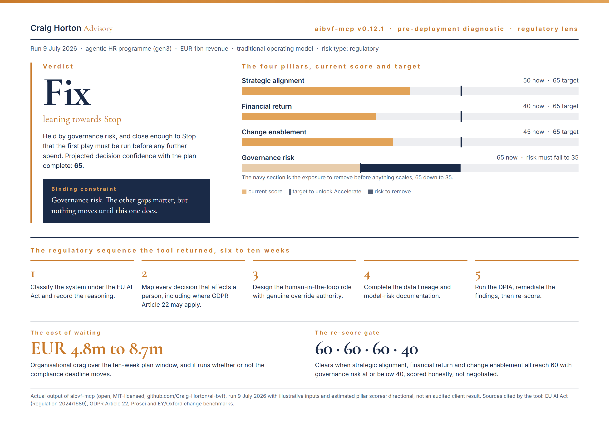

The Operating Model Change
What's the latest?
This week Microsoft announced it is eliminating around 2.1% of its global workforce, about 4,800 people, as part of its company transformation.
Amy Coleman, Microsoft's Chief People Officer, said those roles are not being replaced by AI, and I believe that statement, while also believing the operating model is changing underneath it.
AI changes the volume of coordination, the decisions a manager sees first, the work that moves between teams, and the judgement leaders are expected to make when an agent is now part of the workflow.
A question came to mind: which work has genuinely changed, what decisions have moved, who owns the outcome once an agent is involved, and where does human judgement still have authority to intervene, challenge or stop the work?
This is where many AI programmes are heading, because now the operating model is starting to catch up.
Why does it matter?
Using the same agentic HR initiative from issue 13, I uploaded through the AI BVF, this time with the regulatory lens switched on.
Result, came back as Fix, leaning towards Stop, held by governance risk, because nothing should move until this was fixed.
The plan it returned was a pre deployment sequence:
- Classify the system under the EU AI Act
- Map every decision that affects a person, including where GDPR Article 22 may apply
- Design the human-in-the-loop role with genuine override authority
- Complete the data lineage and model-risk documentation
- Run the DPIA, remediate the findings, then re-score
It also calculates your waiting time, about EUR 5m to EUR 9m of organisational drag over a 10 week window, remember, that cost still applies even with your deadline pushed out.

The AI BVF regulatory readout from this run. The platform is open on the MCP registry as aibvf-mcp version 0.12.1, at github.com/Craig-Horton/ai-bvf.
"We are not replacing people with AI" may be true at the level of a role, but I am seeing enterprises change the work around the role: who prepares the decision, who reviews it, what evidence remains, and who carries accountability when the output is wrong.
That is why the redesign has to come before the project!